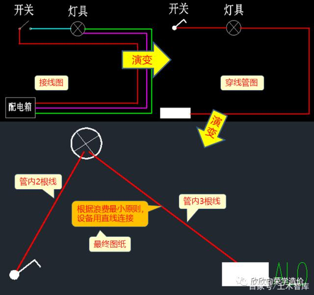
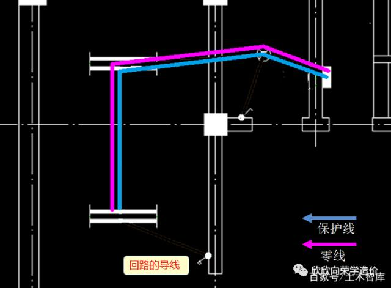
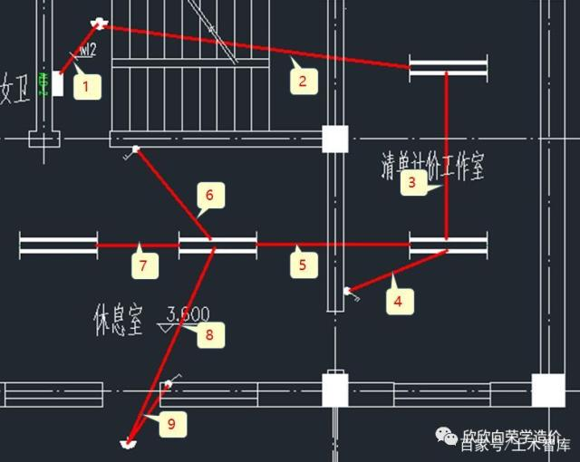
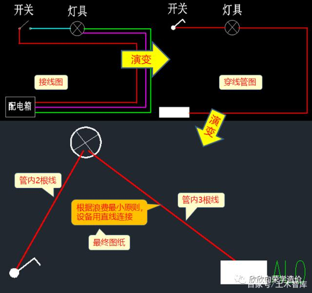
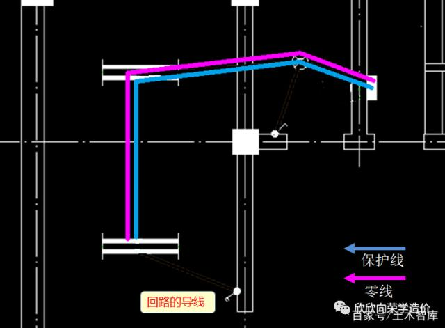
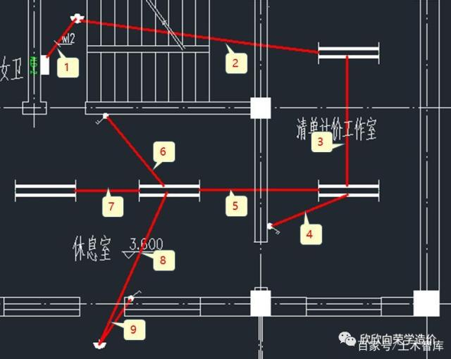

2020/08/07
原创作者：张向荣
同学们，大家好，今天来讲安装照明工程中的平面图。系统图与平面图是安装图纸中的核心内容，也是很多新手头疼看不懂的内容。
今天就讲讲照明平面图的读识。
一、确定回路的组成
在上一篇《读懂照明系统图》文章中，我们知道了系统图是整个建筑电路的构成，是用来表明供电线路与各设备工作原理及其作用，相互间关系的一种表达方式。
把上一次分析的系统图拿出来，可以看出：系统图的电流最后流向了各个回路。
那么这些回路是什么构造呢？
图1
这时就需要看图纸中的平面布置图了，如图2所示
图2
可以看出照明安装的图纸是在建筑图的基础上，增加了灯具管线的布置。图纸上的柱，墙，门窗等，大家应该都可以看得懂。
但是图上乱七八糟的线，还有各种符号应该怎么看，同学们是没有思路的。
虽然这是一个很简单的小楼，但是有6个回路，放在平面图纸中看起来比较乱。
看图的第一步，就是分清各个回路，方法就行与系统图对应，在平面图中找到回路的组成。
图3
理线路时一定要有下面这个思路概念：
进户线→总配电箱→干管→分配电箱→支管→用电设备
也就是照明系统的组成。
回路的支线一定是从配电箱里出来的，
看图时首先放大找到配电箱，
顺着配电箱出来的线路，用鼠标沿着回路走一遍，
就可以把一条回路的走向，和它通过的设备串起来。
图4
这时就会有一个问题：当在图纸很大，线路复杂，有些线可能交错，如何判断哪个时哪个的回路呢？
方法其实很简单，只要明白，在平面图内，管线不会平白无故的分支，那在哪里分支呢？
在接线盒中接线、分支。
如开关，灯具等设备后边一定有一个接线盒，电线在这里边进行接线和分出线路。
 图5
如上图所示，虽然回路1与回路4，中间有交错的地方。
但是它们没有任何关系，垂直方向的一定是回路1，而水平方向的是回路4。
回路1在灯盒内分线，一根去找开关，一根继续通往其它设备。
虽然听起来比较复杂，事实上当你自己看着图纸顺下来时，会发现非常简单，只需要仔细。
图6
为看图方便，把其它的回路隐去，只留下WL1，如图所示。
留下的回路1，可能还是看不懂，原因是安装图纸基本上都是由符号组成，很多同学就先去学习识别符号，其实是没有必要的。
安装的标准符号总共有几千的个，学习的成本很大，可能还记不住。一般图纸都会有大样图示，对应平面图识别清楚就行，慢慢工程做多了，常见的符号示意也就清楚了。
图7
图5
如上图所示，虽然回路1与回路4，中间有交错的地方。
但是它们没有任何关系，垂直方向的一定是回路1，而水平方向的是回路4。
回路1在灯盒内分线，一根去找开关，一根继续通往其它设备。
虽然听起来比较复杂，事实上当你自己看着图纸顺下来时，会发现非常简单，只需要仔细。
图6
为看图方便，把其它的回路隐去，只留下WL1，如图所示。
留下的回路1，可能还是看不懂，原因是安装图纸基本上都是由符号组成，很多同学就先去学习识别符号，其实是没有必要的。
安装的标准符号总共有几千的个，学习的成本很大，可能还记不住。一般图纸都会有大样图示，对应平面图识别清楚就行，慢慢工程做多了，常见的符号示意也就清楚了。
图7
 图8
到现在我们已经把WL1的线路以及设备整理清楚了。
由一个开关、一个防水防尘灯，一个双联开关、两个双管荧光灯组成。
二、识图基础原理
对于老手来说，这个线路已经看完了，因为他知道里边的线是如何接的。
但是对于新手来说，就是图纸表示的一根线连接起来所有设备，并不知道导线的走向。
图纸中用一根线表示，其实可以理解为配线导管，里边的线是不表示出来的，如果画出来，那图纸就更乱了。
图8
到现在我们已经把WL1的线路以及设备整理清楚了。
由一个开关、一个防水防尘灯，一个双联开关、两个双管荧光灯组成。
二、识图基础原理
对于老手来说，这个线路已经看完了，因为他知道里边的线是如何接的。
但是对于新手来说，就是图纸表示的一根线连接起来所有设备，并不知道导线的走向。
图纸中用一根线表示，其实可以理解为配线导管，里边的线是不表示出来的，如果画出来，那图纸就更乱了。
 图9
大部分图纸都会标注管内导线的数量，如图所示。毕竟安装算量的主要项目之一就是算导线的长度，知道根数非常重要。
图10
而我们这份图纸没有给标注，就需要算一下，顺便捋一下线路是怎么走的，需要初中高中的物理知识，忘了也没有关系，只要明白线路中导线应该是闭合的回路这个概念就可以了。
图11
在电气专业中根据导线的性质，要把这里面的导线分为火线，零线，控制线。
图12
为了保护人的安全不被电到会增加保护线。
把上边的图纸转换一下，如图所示。就和实际图纸一样了。

图13
配电箱到灯具：有3根线（火线、零线、保护线）。
灯具到开关：有2根线（火线、控制线）。
导线是软的，可以任意弯折，肯定不是一根线配一根管，而是一根管里可以有几根线
三、确定线路的走向及根数
看懂上边这些概念，我们再把回路1拿过来。
火线的走向：
图14
想一下上边的电路导线的走先，导线从电源出来，先找开关。
虽然图纸中是连在一起的，但是火线不能直接连上灯具，那样就是长明灯，费电不说，长明灯是给死人用的，千万不要这样接。
火线先找开关，开关来控制设备。看着是连着的，其实只是路过，火线出来先找开关。
控制线走向
图15
控制线是开关到设备，上边的开关出来一根线控制上边的防水防尘灯。
下部是一个双联开关，也就是一个开关控制两个灯，出来的是2根控制线。
图16
开关的图示有两个角，一个角接一根控制线。
一根控制线控制下面的荧光灯；
一根控制线路过上面的荧光灯，在下面的荧光灯处，没有接入，只是路过。
现在灯具的供电线路走完了，可以看出有些地方一根线，有些地方两三根线。
图17
但是这样的电路是不通的，还需要回去线。
设备运转需要形成闭合回路。
回去的线就是零线和保护线，走法就比较简单了，就是回到配电箱。

图18
零线和保护线就到配电箱，形成我完整的回路了。
图19
再次看一下管中有几根线，如图所示。如果中间哪里看不懂，一定要自己顺着捋一遍，把电流的走向看明白。
到现在平面图的所有信息就讲清楚了：
回路1的设备是：一个开关、一个防水防尘灯，一个双联开关、两个双管荧光灯。
上部开关控制防水防尘灯、双联开关分别控制两个双管荧光灯。
管内电流的走向，与管内导线的数量需要自己分析一下，做到心中有数。
纸上得来终觉浅，绝知此事要躬行。
为了检验一下是否真的看得懂，需要实际再来识别一个。如下图所示，有兴趣的同学来读识一下WL2中的设备数量，那些开关控制那些设备，各个配管内导线的数量又是多少？
欢迎在评论里分享你的答案，如果觉得本文不错，或者数不清楚了，欢迎分享给朋友大家一起来学习。

图20
图9
大部分图纸都会标注管内导线的数量，如图所示。毕竟安装算量的主要项目之一就是算导线的长度，知道根数非常重要。
图10
而我们这份图纸没有给标注，就需要算一下，顺便捋一下线路是怎么走的，需要初中高中的物理知识，忘了也没有关系，只要明白线路中导线应该是闭合的回路这个概念就可以了。
图11
在电气专业中根据导线的性质，要把这里面的导线分为火线，零线，控制线。
图12
为了保护人的安全不被电到会增加保护线。
把上边的图纸转换一下，如图所示。就和实际图纸一样了。

图13
配电箱到灯具：有3根线（火线、零线、保护线）。
灯具到开关：有2根线（火线、控制线）。
导线是软的，可以任意弯折，肯定不是一根线配一根管，而是一根管里可以有几根线
三、确定线路的走向及根数
看懂上边这些概念，我们再把回路1拿过来。
火线的走向：
图14
想一下上边的电路导线的走先，导线从电源出来，先找开关。
虽然图纸中是连在一起的，但是火线不能直接连上灯具，那样就是长明灯，费电不说，长明灯是给死人用的，千万不要这样接。
火线先找开关，开关来控制设备。看着是连着的，其实只是路过，火线出来先找开关。
控制线走向
图15
控制线是开关到设备，上边的开关出来一根线控制上边的防水防尘灯。
下部是一个双联开关，也就是一个开关控制两个灯，出来的是2根控制线。
图16
开关的图示有两个角，一个角接一根控制线。
一根控制线控制下面的荧光灯；
一根控制线路过上面的荧光灯，在下面的荧光灯处，没有接入，只是路过。
现在灯具的供电线路走完了，可以看出有些地方一根线，有些地方两三根线。
图17
但是这样的电路是不通的，还需要回去线。
设备运转需要形成闭合回路。
回去的线就是零线和保护线，走法就比较简单了，就是回到配电箱。

图18
零线和保护线就到配电箱，形成我完整的回路了。
图19
再次看一下管中有几根线，如图所示。如果中间哪里看不懂，一定要自己顺着捋一遍，把电流的走向看明白。
到现在平面图的所有信息就讲清楚了：
回路1的设备是：一个开关、一个防水防尘灯，一个双联开关、两个双管荧光灯。
上部开关控制防水防尘灯、双联开关分别控制两个双管荧光灯。
管内电流的走向，与管内导线的数量需要自己分析一下，做到心中有数。
纸上得来终觉浅，绝知此事要躬行。
为了检验一下是否真的看得懂，需要实际再来识别一个。如下图所示，有兴趣的同学来读识一下WL2中的设备数量，那些开关控制那些设备，各个配管内导线的数量又是多少？
欢迎在评论里分享你的答案，如果觉得本文不错，或者数不清楚了，欢迎分享给朋友大家一起来学习。

图20